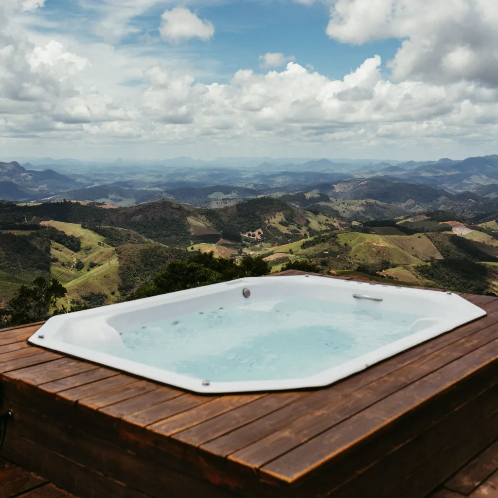

Refinishing & Repairs
Bathtub & Hot Tub Refinishing
Chips, stains, and dated colors resurfaced into a smooth, durable finish — without tearing out the tub or the hot tub shell.

Whether it's a standard bathtub or an acrylic or fiberglass hot tub shell that's lost its shine, our refinishing process strips away the old surface and rebuilds it with a durable, high-gloss coating — done in a single visit, with no demolition and no drawn-out install.
From small chips and cracks to full color changes, we handle it all — including custom color matching so refinished tubs and hot tub shells blend seamlessly with the surrounding bathroom or deck.
- Chips, cracks & stains resurfaced
- Acrylic & fiberglass hot tub shells
- Custom color matching available
- Finished in a single visit
Why Refinish
A Fraction of the Cost, a Fraction of the Time
Replacing a bathtub or hot tub shell means days without a working bathroom, contractors coordinating plumbing, tile, and drywall work around a single fixture, and a bill that often runs into the thousands once demolition and disposal are added in. Refinishing skips nearly all of it. Instead of tearing out the old tub or shell, we strip away the failing surface, repair what's underneath, and rebuild it with a professional-grade coating that looks and performs like new — usually finished in a single visit and ready to use again within a day or two.
For homeowners, that means no drywall dust, no re-tiling, and no weeks-long renovation schedule. For landlords and property managers, it means a unit that's back in service fast, without the downtime and expense of a full fixture swap. And because the process works on the tub or shell you already have, your existing plumbing, surround, and tile stay untouched — which keeps both the cost and the mess to a minimum.
Save 60–80%
Refinishing typically costs a fraction of a full tub or hot tub shell replacement, with no demolition, plumbing changes, or tile work required.
Done in a Day
Most bathtubs are refinished in a single visit. Hot tub shells depend on size and repair needs, but both finish far faster than a full replacement install.
Less Mess, Less Disruption
We protect the surrounding floors, walls, and fixtures before we start, and there's no demolition dust or debris to clean up afterward.
Built to Last
A properly refinished surface holds up to years of daily use when cared for with non-abrasive cleaners — every job is backed by a written warranty.
Before & After
Drag to See the Difference
A tub or hot tub shell that's dull, chipped, or the wrong color doesn't always need to go. Drag the slider to see the kind of transformation a professional refinish can deliver — same tub, same plumbing, same footprint, just a completely different finish.

 Before
After
Before
After
Refinishing restores the beauty of your bathtub and create a serene oasis.
Our Process
How We Refinish a Tub or Hot Tub Shell
Every bathtub and hot tub shell we refinish goes through the same careful process, whether it's a first-time reglaze or a repeat job on a surface that's been refinished before.
Protect & Prep the Space
Before anything else, we mask off the surrounding floors, walls, vanity, and fixtures with plastic sheeting and tape so overspray and dust stay contained to the tub or shell itself. Existing caulking or hardware in the way is removed at this stage.
Repair Chips, Cracks & Wear
Chips, hairline cracks, worn jet fittings, and small structural issues are filled and repaired before any coating goes on. Skipping this step is the most common reason a cheap refinish job fails early — repairs need to be solid and fully cured first.
Strip, Etch & Sand
The existing surface is stripped of soap scum, oils, and old coating, then chemically etched and hand-sanded to create a profile the new coating can bond to. This step separates a refinish that lasts years from one that peels within months.
Prime & Spray the Coating
With the surface prepped and the space fully ventilated, we spray a bonding primer followed by multiple coats of a high-solids, high-gloss finish — carefully worked around jets, drains, and fittings on hot tub shells and jetted tubs. Custom color matching happens at this stage.
Cure, Reinstall & Walkthrough
Once the final coat is on, the surface flashes off before hardware, drains, and caulking are reinstalled. We walk the finished tub or shell with you and confirm exactly when it's safe to use — typically 24 to 48 hours later.
What We Refinish
Every Tub & Hot Tub Material, Handled Right
Bathtubs and hot tub shells are made from a handful of different materials, and each one needs a slightly different prep and coating approach to hold up long-term.
Porcelain & Cast Iron Tubs
The classic combination — heavy, durable, and prone to chipping and dulling over decades of use. These respond exceptionally well to refinishing.
Acrylic & Fiberglass Tubs
Lighter-weight tubs that scratch, yellow, and develop surface crazing over time. We repair cracks and stress fractures before recoating.
Hot Tub & Spa Shells
Sun exposure, chemicals, and years of use take a toll on acrylic and fiberglass shells. We refinish around jets, headrests, and fittings without replacing a single component.
Cultured Marble Tubs & Surrounds
Prone to cracking, staining, and gel-coat failure. We repair structural cracks first, then refinish to a smooth, glossy result.
Jetted & Whirlpool Tubs
The same careful masking and coating work as a standard tub, with extra attention paid to keeping every jet, air line, and fitting free of overspray.
Walk-In & Soaker Tubs
From deep soaker tubs to walk-in tubs with built-in seating and doors, we adapt our process to the tub's shape and hardware so nothing gets missed.

Hot Tub & Spa Shells
Hot Tub & Spa Shell Refinishing
Hot tub and swim spa shells take more abuse than almost any other surface in a home — constant exposure to heat, chemicals, sun, and body oils breaks down the gel coat and acrylic finish over years of use, leading to fading, chalky patches, rough spots, and hairline cracks around jets and headrests.
Replacing a hot tub shell usually means draining the system, disconnecting the plumbing and equipment pack, and either patching the existing shell yourself or paying for a full new shell and reinstall. Refinishing sidesteps all of that. We work with the shell in place, repairing cracks and worn spots around jets and fittings first, then recoating the entire interior with a durable, UV- and chemical-resistant finish built to handle hot water and spa chemicals long-term.
Color changes are common with hot tub refinishing — plenty of owners use it as a chance to update a dated shell color to match a new deck, patio, or landscaping. Whether it's a small crack repair around a jet fitting or a full shell recoat, the same warranty and workmanship apply as our bathtub refinishing.
Care & Maintenance
Caring for Your Refinished Surface
A refinished tub or hot tub shell is durable, but it's not indestructible, and how it's cleaned in the first few weeks matters. Here's how to keep the finish looking new for years.
- Wait before use. Give the coating the full cure window we recommend — usually 24 to 48 hours — before running water or getting in.
- Skip abrasive cleaners. Scouring powders, steel wool, and harsh abrasive pads will dull a refinished surface over time. Stick to non-abrasive liquid cleaners and a soft cloth or sponge.
- Use bath mats carefully. Some rubber-backed mats can trap moisture against the surface. A mat without solid rubber backing, or one you lift out and dry after each use, is the safer choice.
- Avoid dropping heavy or sharp objects. The coating resists everyday wear well, but a dropped bottle or razor can still chip it, just like it could a factory finish.
- Keep hot tub chemistry balanced. For hot tub and spa shells, staying within the recommended pH and sanitizer range protects the coating the same way it protects the equipment.
Testimonials
What Calgary Homeowners Are Saying
"We have a swim spa that has some hairline cracks in it. Our warranty sent this company out and I'm extremely impressed!!! ...He did so great at matching the color of the tub and everything! He definitely takes pride in his work!!!"
— Amanda, Calgary
"We are extremely happy with the reglazing of our soaker tub and shower. ...very respectful and accommodating! We would recommend his work!!"
— Sharon, Calgary
"Did a great job on my early 70s tub. Looks brand new."
— Andrew K., Calgary
FAQ
Bathtub & Hot Tub Refinishing Questions
Most bathtub refinishing jobs are completed in a single visit, typically 3 to 4 hours of hands-on work. Hot tub shells and tubs with more extensive chip or crack repair can take longer, since repairs need to fully cure before the coating goes on.
We recommend waiting 24 to 48 hours before using a freshly refinished tub or hot tub shell, depending on the coating and conditions on the day of the job. We'll give you an exact timeline before we leave.
Yes, there's an odor while the coating is sprayed, similar to fresh paint. We run extractor fans and ventilate the space throughout the job to keep it to a minimum, and it dissipates quickly once the coating flashes off.
With normal care and non-abrasive cleaning, a professionally refinished surface typically lasts 10 to 15+ years before it needs attention again — comparable to the lifespan of the original factory finish.
Yes. Custom color matching is available whether you're matching an existing surround or switching to a completely new color. Let us know what you're going for when you send photos for your quote.
We refinish porcelain, cast iron, acrylic, and fiberglass bathtubs, along with acrylic and fiberglass hot tub and swim spa shells, jetted and whirlpool tubs, and cultured marble tubs and surrounds.
Both. Chips, cracks, worn jet fittings, and other damage are repaired before the coating goes on. Recoating over unrepaired damage is a shortcut that leads to early failure, so repair always comes first.
Yes, every bathtub and hot tub refinishing job we complete is backed by a written warranty. We'll go over the specific coverage for your project as part of your quote.
Ready to See What Your Tub Could Look Like?
Send a few photos and get a fast, upfront quote — no in-home visit required to get started.